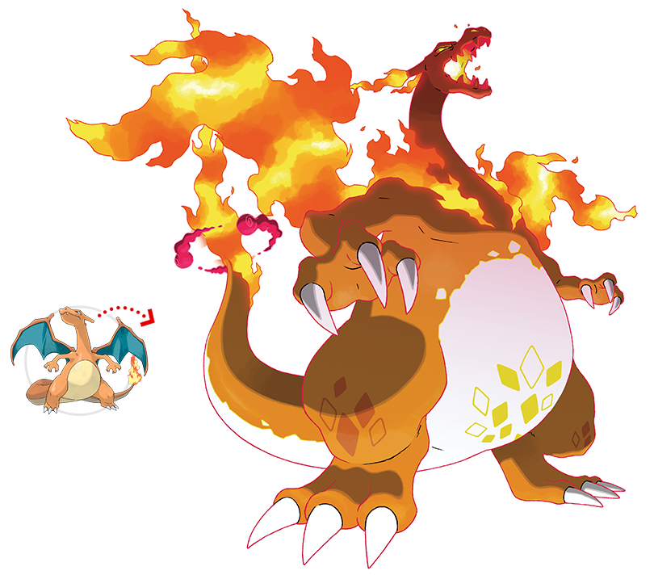

Kanto fue la primera región que se nos presentó del mundo pokemon, y los inicilaes que se nos ha mostrado son de tres tipos que sería tipo planta, agua y fuego.
Aunque en la serie nos aparece que se pude elegir como inical a Pikachu, este no es uno de los iniciales básicos de la región que un entrenador puede elegir.
Bulbasaur
Bulbasaur
Descripción
Es el pokemon inicial de la región de Kanto de tipo planta, pero en verdad este es de tipo planta y veneno.
Bulbasaur tras nacer, crece alimentándose durante un tiempo de los nutrientes que contine el bulbo de su lomo.
Tiene una altura media de 0,7 m y un peso medio de 6,9 kg.
Su categoría es Semilla y su habilidad es Espesura .
Es débil contra los pokemon de tipo fuego, hielo, volador y psíquico.
Evoluciones
La primera evolución de Bulbasaur es Ivysaur, que sería la primera fase,
y después evoluciona a su fase final que sería Venusaur.
Ivysaur
Ivysaur
Ivysaur es la evolución de Bulbasaur, es un pokemon tipo planta y veneno al igual que Bulbasaur.
Ivysaur cuanta más luz recibe, más aumenta su fuerza y más se desarrolla el capullo que tine en el lomo.
Tiene una altura media de 1 m y un peso medio de 13 kg; en categoría, habilidad y debilidades es igual que Bulbasaur.
Venusaur
Venusaur
Venusaur es la evolución de Ivysaur, y la fase final de Bulbasaur, es un pokemon tipo planta y veneno.
Venusaur puede convertir la luz del sol en energia, y por ello es más poderoso en verano.
Venusaur mide 2 m de altura de media y tiene un peso medio de 100 kg; la categoría, habilidad y debilidades es igual que Bulbasaur.
Charmander
Charmander
Descripción
Charmander es el pokemon inicial de tipo fuego de la región de Kanto.
La llama de su cola indicca su fierza vital. Si está dévil, la llama de su cola arderá más tenue.
Charmander tiene una altura media de 0,6 m y un peso medio de 8,5 kg.
Su categoría es Lagartija y su habilidad es Mar Llamas.
Es débil contra los pokemon de tipo agua, tierra y roca.
Evoluciones
Las evoluciones de Charmader sería Charmeleon, que es la fase uno, y Charizard, la fase final.
Charmeleon
Charmeleon
Charmeleon es la evolución de Charmander, es un pokemon de tipo fuego.
Al agitar Charmeleon su ardiente cola, eleva poco a poco la temperatura a su alrededor para sofocar a sus rivales.
Tiene una altura media de 1,1 m y un peso medio de 19 kg.
La categoría de Charmeleon es Llama, la habilidad y debilidades es igual que Charmander.
Charizard
Charizard
Charizard es la evolución de Charmeleon, y la fase final de Charmander, es un pokemon de tipo fuego y volador.
Cuando Charizard se enfurece de verdad, la llama de la punta de su cola se vuelve de color azul.
Charizard tiene una altura media de 1,7 m y un peso medio de 90,5 kg.
Su categoría y habilidad es igual que Charmeleon, pero a las debilidades se le añade el tipo eléctrico y se elimina el tipo tierra.
Squirtle
Squirtle
Descripción
Squirtle es el pokemon inicial de tipo agua de la región de Kanto.
La forma de Squirtle se parece al de una tortuga a dos patas.
Squirtle tras nacer, se le hincha el lomo y se le forma un caparazón; y escupe una poderosa espuma por la boca.
Tiene una altura media de 0,5 m y un peso medio de 9 kg.
Su categoría es Tortuguita y tiene la habilidad Torrente.
Es débil contra los pokemon de tipo eléctrico y planta.
Evoluciones
La primera fase o evolución de Squirtle es Wartortle, y su fase final es Blastoise.
Wartortle
Wartortle
Wartortle es la primera evolución de Squirtle, es un pokemon de tipo agua.
Wartortle tiene un cola larga y peluda que simboliza la longevidad y lo hace popular entre los mayores.
Tiene una altura media de 1 m y un peso medio de 22,5 kg.
Su categoría es Tortuga; su habilidad y debilidades son iguales a las de Squirtle.
Blastoise
Blastoise
Blastoise es la evolución de Wartortle y la fase final de Squirtle, es un pokemon de tipo agua.
Blastoise aumenta de peso deliberadamente para contrarrestar la fuerza de los chorros de agua que dispara.
Tiene una altura media de 1,6 m y un peso medio de 85,5 kg.
Su categoría es Armazón,y su habilidad y debilidades son iguales a las de Squirtle.
Pokemon shiny
Los pokemon shiny, son pokemon que raramente aparecen y que tiene una diferncia de color con el pokemon original.
Los pokemon shiny que vamos ha ver serán los iniciales que hemos visto arriba, junto con sus evoluciones.
Bulbasaur y evoluciones
Bulbasaur shinyIvysaur shinyVenusaur shiny
La versión shiny de Bulbasaur y sus evoluciones se diferencia sobre todo por el color del cuerpo
que cambia de color turquesa a un verde manzana; y el capullo o flor que tiene
en su lomo Ivysaur y Venusaur cambia de color rosa granate a amarillo.
Charmander y evoluciones
Charmander shinyCharmeleon shinyCharizard shiny
La versión shiny de Charmander y Charmeleon el cambio de color no se nota mucho,
en Charmander cambia de color naranja a amarillo, y Charmeleon cambia de color rojo anaranjado a un naranja más brillante;
y el cambio de color en Charizard se nota más, cambiando de naranja a un gris oscuro.
Squirtle y evoluciones
Squirtle shinyWartortle shinyBlastoise shiny
La versión shiny de Squirtle se nota vastante el cambio de color, sobre todo en su caparazón que se vuelve de color verde.
Pero en sus evoluciones no se nota tanto ese cambio de color, ya que solo su piel cambia de color, de azul a lila.
Megaevoluciones
MegapiedrasPiedra activadora
Las megaevoluciones son transformaciones superiores a la fase final, pero solo son transformaciones momentaneas.
Se necesita de unas piedras especiales para poderse realizar la evolución y hay una específica para cada pokemon.
Estas piedras se compone de dos partes:
Una parte es la piedra activadora, que lo llevaría el entrenador.
La otra parte es la llamada de forma general megapiedra, que lo llevaría el pokemon.
Estas evoluciones comenzaron a aparecer en la región de Teselia, en la temporada de XY.
Mega-Venusaur
Mega-VenusaurMega-Venusaur shinyVenusaurita
La megapiedra de Venusaur se llama Venusaurita y su megaevolución se llama Mega-Venusaur.
Mega-Venusaur tiene también una versión shiny y la diferencia de color de la versión shyni es igual que la de Venusaur.
Mega-Charizard
Mega-Charizard XMega-Charizard X shinyCharizardita X
Esta la versión X de Mega-Charizard, para realizar la megaevolución se necesita de una Charizardita X.
Mega-Charizard X tiene una versión shiny, en la que su piel se vuelve de color verde con acentos en color rojo
su llama sigue siendo de color azul.
Mega-Charizard YMega-Charizard Y shinyCharizardita Y
Esta es la versión Y de Mega-Charizard, se necesita de una Charizardita Y para que megaevolucione Charizard a Mega-Charizard Y.
Tiene una versión shiny en la que su gama de color es igual que Charizard shiny.
Mega-Blastoise
Mega-BlastoiseMega-Blastoise shinyBlastoisita
La megapiedra de Blastoise se llama Blastoisita, y su megaevolución se llama Mega-Blastoise.
Mega-Blastoise tiene una versión shiny, los colores de la versión shiny combina el caparazón verde de la versión shiny de Squirtle
y la piel de color lila de Blastoise shiny.
Gigamax
Muñequera dinamax
La forma gigamax de los pokemon se incorpora en la región de Galar, en la temporada de Espada y Escudo.
La forma gigamax es el pokemon se vuelve de un gran tamaño que se puede comparar a la de un rascacielos.
Para realizar el gigamax es necesario un artefacto que es llamado Muñequera Dinamax.
Venusaur Gigamax
Venusaur GigamaxVenusaur Gigamax shiny
La forma Gigamax de Venusaur tiene una altura media superior a 24 m de altura, y su peso es incalculabre
por su gran tamaño.
La energía Gigamax hace que la flor de Venusaur crezca hasta cubrir todo su cuerpo; y cuando la flor
comienza a expulsar polen, parece una erupción volcánica.
Tiene también una versión shiny, en donde su gama de colores es igual que Venusaur shiny.
Todos sus ataques de tipo planta en forma Gigamax se combierten en Gigalianas.
Charizard Gigamax

Charizard GigamaxCharizard Gigamax shiny
La forma Gigamax de Charizard tiene una altura superior a 28 m y su peso al igual que Venusaur Gigamax es
incalculabre por su gran tamaño.
Las llamas de su interior se vuelve más potente, y expulsa fuego por la boca y los cuernos, además de la cola.
Tiene un versión shiny y su color es igual que Charizard shiny.
Los ataques de tipo fuego en su forma Gigamax se convierte en Gigallamarada.
Blastoise Gigamax
Blastoise GigamaxBlastoise Gigamax shiny
En la forma Gigamax de Blastoise tiene una altura superior a 25 m y su peso al igual que en los pokemon anteriores
no se puede medir por su gran tamaño.
En la forma Gigamax, su caparazón también aumenta de tamaño por lo que cuenta con más cañones, con un total de 31
cañones de distintos calibres. Tiene un cañón central que es tremendamente poderoso.
En su versión shiny, la gama de colores es igual que Blastoise shiny.
Los movimientos de tipo agua que usa Blastoise Gigamax se convierte en Gigacañonazo.